조종하기는 이제 모델 몫이에요
Anthropic의 코드 변경 수는 5월 하루 약 2,500건에서 9월 하루 3만 건 이상으로 늘었다고 해요. Lydia는 팀이 이제 "수십 개 세션의 관리자"가 됐다고 말해요. 아래 화면 왼쪽은 한 주 할 일 목록이고, 오른쪽은 그 일을 하나씩 맡은 세션들이 PR(Pull Request)까지 가는 모습이에요.
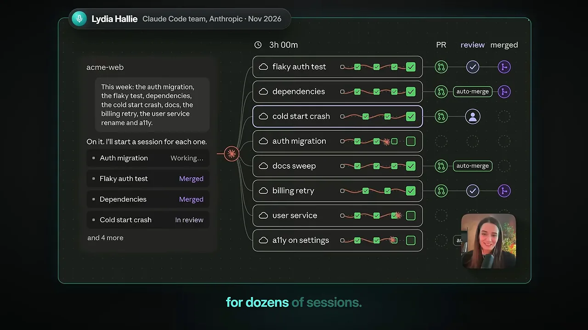
발표는 세션마다 사람이 직접 하던 일 다섯 가지를 길 위에 늘어놓고 하나씩 짚어요. Steering(조종), Approving(승인), Saying no(거절), Checking(확인), Starting sessions(세션 시작)이에요.
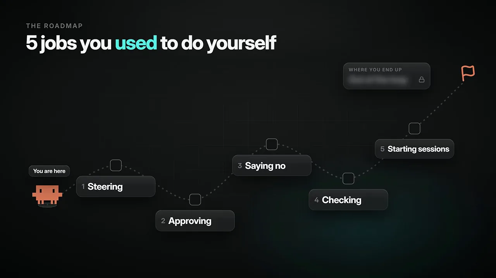
조종하기는 이제 모델이 해요
올해 초 Opus 4.5 시절에는 프롬프트를 던진 뒤 지켜보다가 고쳐 주고 다시 일러 줘야 했어요. 그래서 다들 CLAUDE.md에 IMPORTANT, never 같은 대문자 줄을 채웠죠. Lydia가 매일 쓰는 모델은 이제 Opus 5.5예요. 이렇게 강한 모델에서는 그런 줄이 오히려 모델을 엇나가게 해서 도구 호출이 늘고 결과가 나빠진다고 해요.
nowadays your CLAUDE.md file should only include the things Claude cannot see from your code.
요즘 CLAUDE.md에는 Claude가 코드에서 볼 수 없는 것만 넣어야 해요.
— Lydia Hallie, 영상 00:32
아래 슬라이드의 CLAUDE.md 다섯 줄 가운데 3번 줄 IMPORTANT: always use the auth helper가 강조돼 있어요. 바로 위 경로가 billing.ts, search.ts, settings.ts를 오가며 헤매는 모습이에요.

그래서 줄마다 던질 질문은 하나예요. "Claude가 코드를 읽어서 알아낼 수 있나?" 진행자는 회사 일을 폴더 하나에서 돌려요. CLAUDE.md를 길 안내 지도로 써서 비즈니스 위키, 브랜드 자료, 재무 자료가 어디 있는지 적어 둬요. 파일만 보고는 추측하기 어려운 정보라서 남기는 거예요.
정리는 손으로 할 필요가 없어요. /doctor prompt-audit를 돌리면 지금 쓰는 모델 기준으로 CLAUDE.md와 스킬을 검사해요. 아래 결과에서는 1~4번 줄이 줄로 그어지고 5번 src/legacy still serves our mobile apps만 남아요.
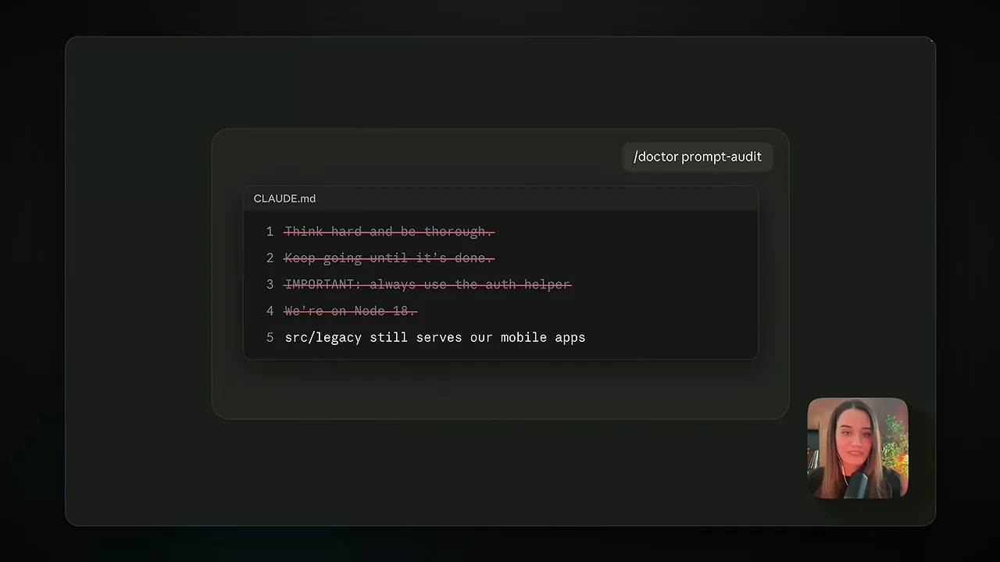
승인하기는 오토 모드가 해요
예전에는 명령마다 허용을 누르거나, 권한 확인을 통째로 건너뛰고 운에 맡겼어요. 이제 터미널과 데스크톱 앱의 기본은 오토 모드예요. 아래 슬라이드처럼 분류기가 명령을 검사하고, 안전하면 그냥 돌려요.
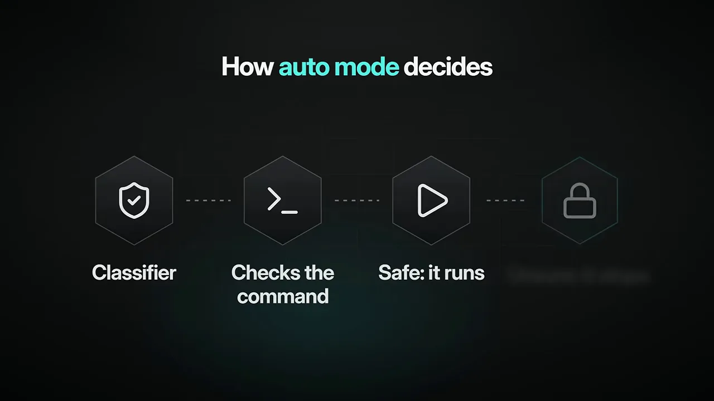
믿을 곳을 문장으로 알려 줘요
오토 모드는 기본으로 지금 폴더와 지금 저장소만 믿어요. 그래서 스테이징에 배포해 달라고 하면 배포 저장소로의 push를 막고, 다시 승인하던 시절로 돌아가요. 이건 설정에 평범한 영어 문장으로 적어 고칠 수 있어요. 아래 ~/.claude/settings.json의 초록 줄이 그 문장이에요.
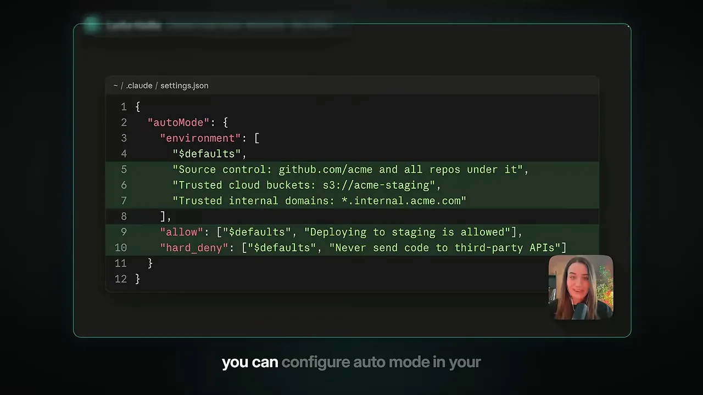
environment에는 믿는 저장소·버킷·도메인을, allow와 hard_deny에는 항상 할 것과 절대 안 할 것을 써요. 이 문장이 그대로 분류기에 전달돼요.
영상 02:15에서 보기직접 쓰기 귀찮으면 명령 하나로 초안을 받을 수 있어요. 프로젝트와 최근 세션을 보고 위 항목을 대신 써 줘요.
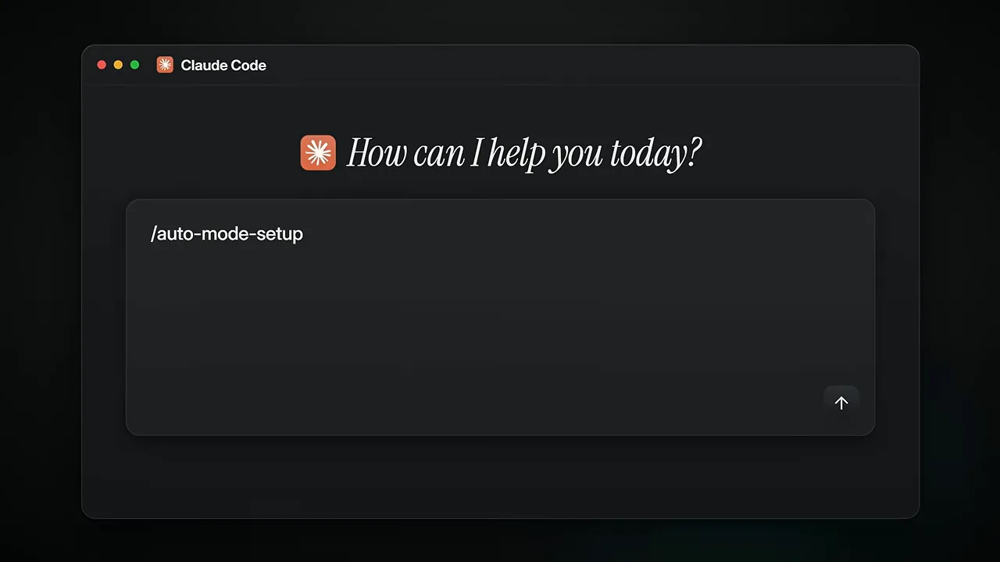
/auto-mode-setup이에요.
영상 02:36에서 보기사람보다 잘 막지만, 열에 하나는 통과해요
Lydia는 Anthropic이 8월에 발표한 실험 결과를 보여 줘요. 왼쪽 보라색 사람 아이콘이 위험한 명령을 알아챈 사람이고, 오른쪽 흰 방패가 오토 모드가 막은 경우예요. 아래 작은 글씨에 조건이 적혀 있어요. 유료 테스터 1,053명, 세션마다 위험한 명령 하나를 끼워 넣었어요.
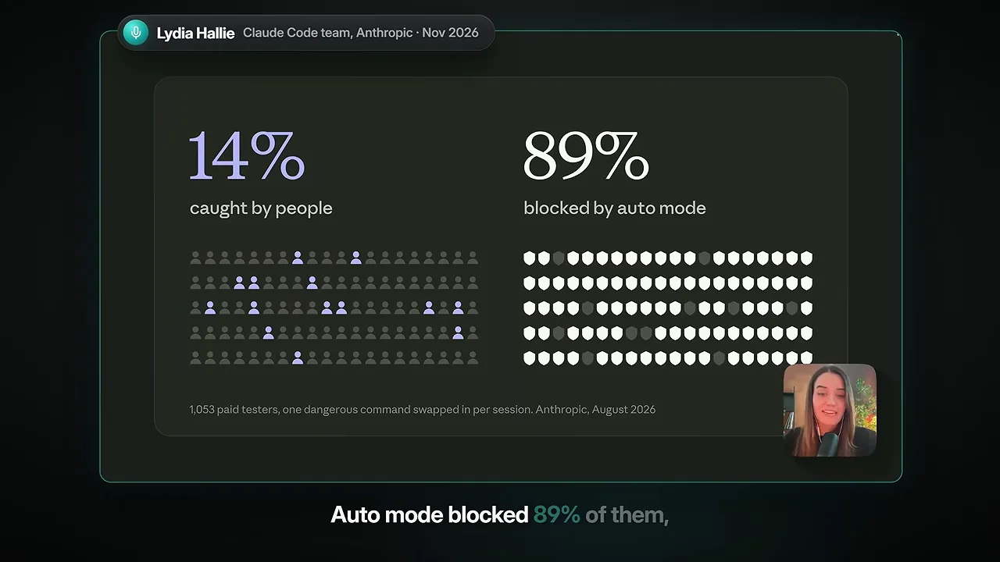
거절하기: deny 규칙과 샌드박스
오토 모드도 열에 하나는 놓치니, 정말 중요한 건 deny 규칙으로 설정 파일에 박아요. deny 규칙은 오토 모드가 판단하기 전에 먼저 걸리는 강제 차단이에요. 아래 슬라이드 윗줄을 보면 Bash git reset --hard 호출이 Deny rule 칸에서 blocked가 되고, 오토 모드 칸에는 'never sees it'이라고 적혀 있어요.
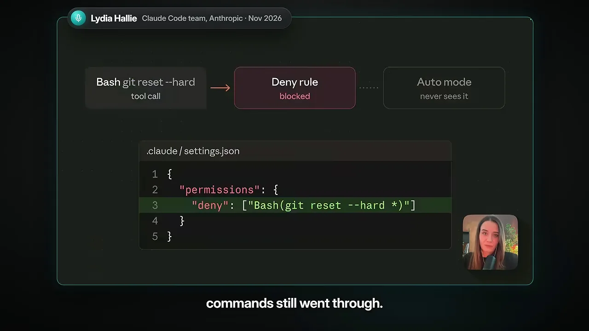
기준은 '되돌릴 수 있나?'
if Claude gets this wrong once, can I take it back?
Claude가 이걸 한 번 틀리면, 되돌릴 수 있나?
— Lydia Hallie, 영상 03:16
슬라이드는 답을 두 칸으로 나눠요. 왼쪽 Yes 칸은 모델에 맡기고, 오른쪽 No 칸은 규칙으로 만들어요.
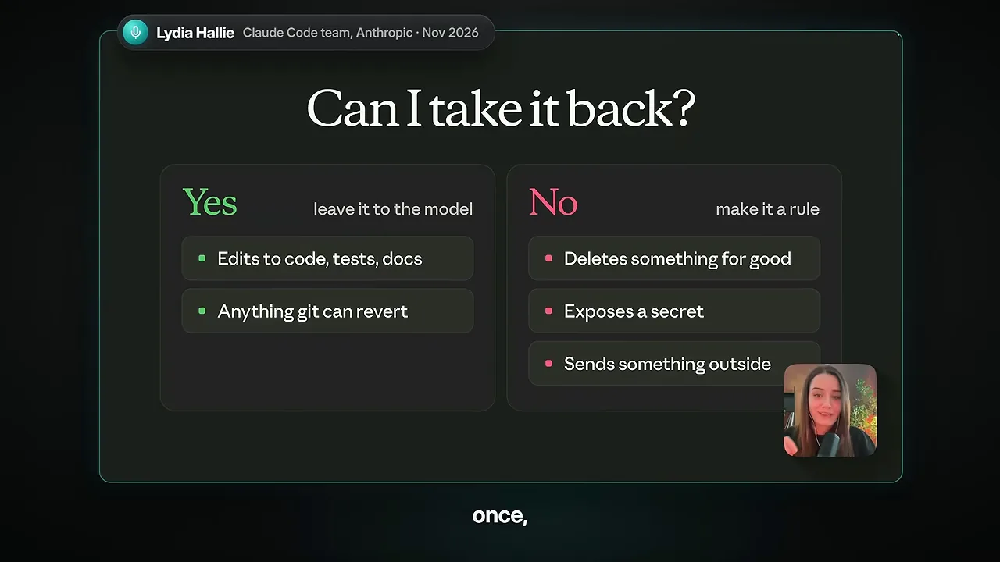
그래서 ".env 파일은 절대 읽지 마"는 프롬프트의 부탁이 아니라 권한 설정의 강제 규칙이 돼야 해요. 아래 화면에서 Read .env와 Bash cat .env 두 시도가 모두 빨간 ×로 막히고, 파일 트리의 .env에는 자물쇠가 붙어요. 오른쪽 설정에 추가된 줄이 "Read(./.env)"예요.
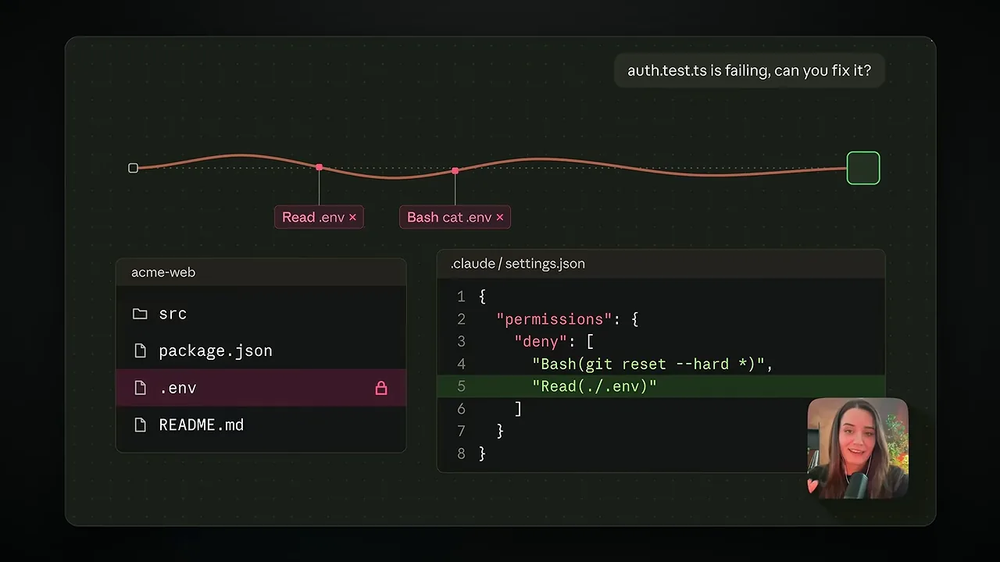
지식 작업에도 기준은 같아요. 초안 고쳐 쓰기는 괜찮지만, 이메일 보내기와 파일 삭제는 되돌릴 수 없어요.
deny 규칙은 명령만 봐요 — 그래서 샌드박스
deny 규칙은 명령 이름만 보고, 그 명령이 실제로 하는 일은 못 봐요. 아래 슬라이드에서 npm test 한 번이 vitest run, 내 테스트 auth.test.ts, 그리고 빨갛게 표시된 node_modules/some-package/index.js까지 돌려요. 그 패키지가 오염돼 있으면 .env, ~/.ssh를 열어 collector.example 같은 낯선 서버로 보낼 수 있어요.
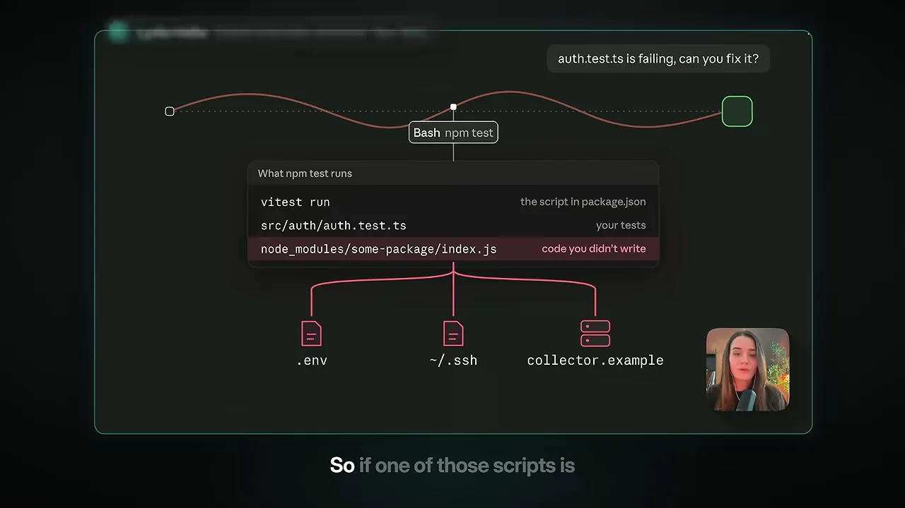
/sandbox를 켜면 운영체제가 명령이 열 수 있는 파일과 접속할 수 있는 사이트를 제한해요. 그러면 나쁜 패키지도 키를 가져가지 못해요. 슬라이드 왼쪽 상자가 샌드박스 안에서 도는 것, 오른쪽이 밖에 있는 것이에요.
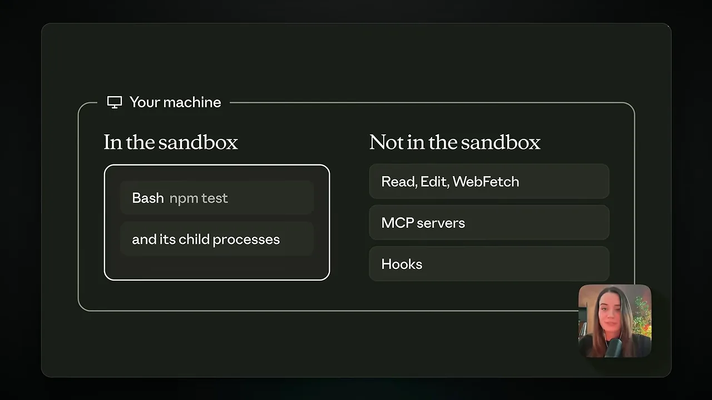
지금까지의 세 겹을 한 그림으로 모으면 이래요. 위에서부터 순서대로 걸러요.
긴 작업은 클라우드 세션에서
Lydia는 아주 긴 작업은 클라우드 세션에서 돌린대요. 코드 사본만 든 새 컴퓨터가 생기고, 노트북을 닫아도 계속 돌아요. 아래 화면 아래쪽 'not in there' 줄처럼 .env, ~/.ssh, GitHub 토큰이 애초에 거기 없어요.
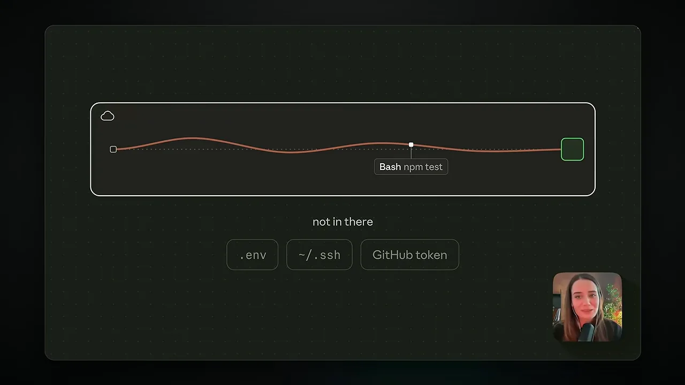
다만 이 기계에서 밖으로 나간 것은 남아요. 아래 슬라이드 왼쪽의 git push로 올린 커밋, 커넥터로 보낸 메시지는 기계가 사라져도 그대로예요. 오른쪽 빨간 두 칸, force push와 비밀값이 든 커밋은 오토 모드와 deny 규칙이 막아요.
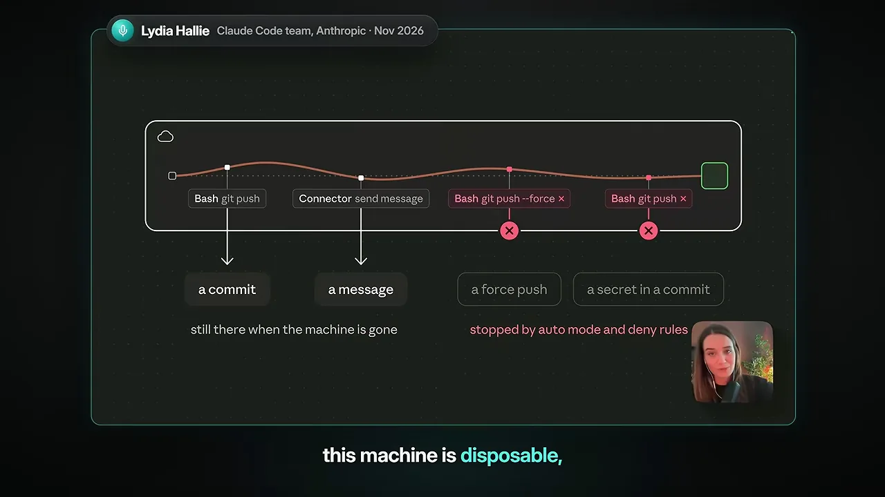
deny 규칙을 프로젝트에 커밋해 두면, 앞으로 여는 모든 클라우드 세션이 그대로 가져가요.
끝났는지 확인하기: 검사, 훅, CI
Claude가 몇 시간을 혼자 돌면 끝에 파일을 다 읽을 수는 없어요. 그런데 같은 프롬프트도 결과가 갈려요. Lydia의 예시는 로그인 시스템을 새 API(Application Programming Interface)로 옮기는 일이에요. 아래 슬라이드에서 같은 요청 'Move auth over to the new API'가 일곱 갈래로 퍼지고, 초록색 'what we wanted'는 그중 하나뿐이에요.
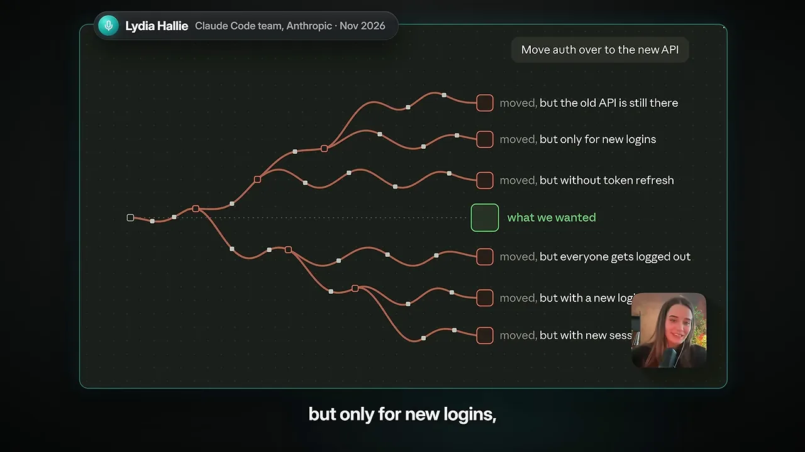
중간에 통과·실패가 갈리는 검사를 줘요
테스트나 스크린샷처럼 통과와 실패가 분명한 검사를 중간중간 줘요. 그러면 모두를 로그아웃시키는 실행이 끝이 아니라 첫 검사에서 잡혀서, 시간과 토큰을 아껴요. 코드가 아니어도 돼요. 연구 보고서라면 '모든 주장에 출처 링크가 있는지', '모든 숫자가 스프레드시트와 맞는지'가 검사예요.
검사는 주관적이어도 괜찮아요. 아래 화면처럼 프롬프트에 '다 된 모습'과 '좋은 모습'을 말로 적고, 작업마다 자기 검사를 붙이면 돼요.
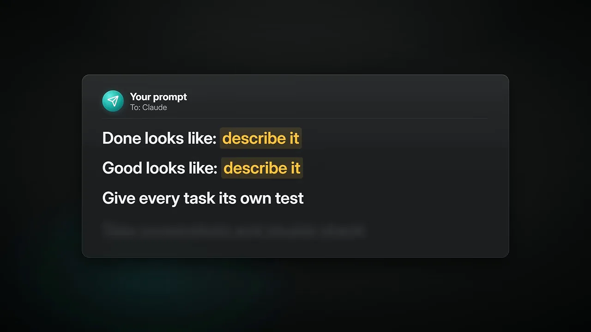
Also like to ask you to show the actual output because you weren't there to see it.
실제 출력을 보여 달라고 하는 것도 좋아요. 그 자리에 없었으니까요.
— Lydia Hallie, 영상 05:59
진행자는 자기 스킬에도 이런 확인 단계를 넣고, /goal을 쓸 때도 그래요. /goal은 끝 조건이 실제로 참이 될 때까지 Claude가 계속 일하게 하는 명령이에요.
매번 돌아야 하는 검사는 훅으로
매번 꼭 돌아야 하는 검사는 훅으로 걸어요. 아래 슬라이드가 세 시점을 보여 줘요. 편집마다 린트(PostToolUse), 작업마다 그 작업의 테스트(TaskCompleted), 끝낼 때 전체 테스트(Stop)예요.
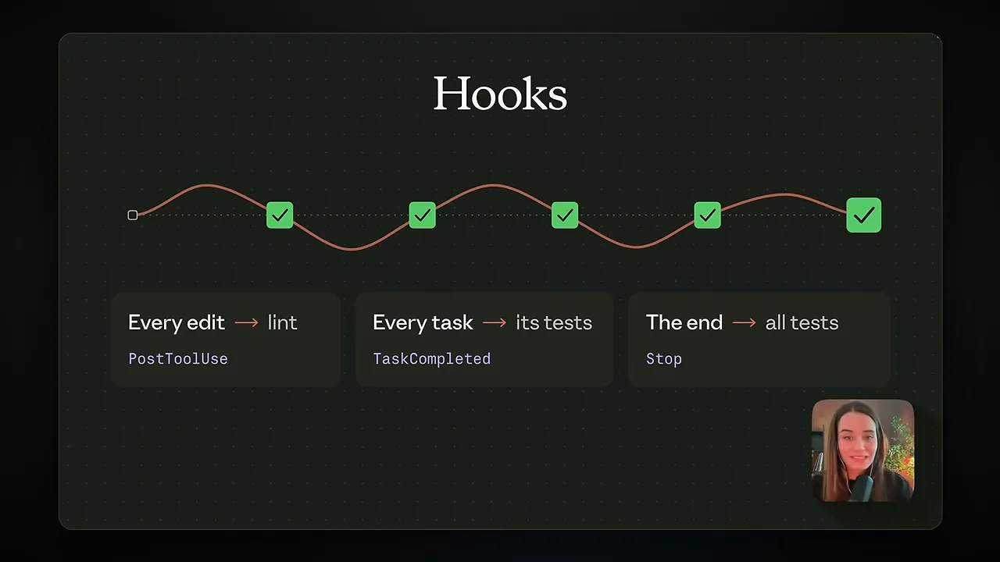
검사가 실패했을 때 스크립트의 종료 코드가 Claude의 다음 행동을 정해요. 아래 슬라이드에서 빨간 × 다음 갈림길을 보면, exit 2는 왼쪽으로 돌아가 고치고(goes back to fix it), exit 1은 오른쪽으로 넘어가 완료 처리돼요(marked as completed).
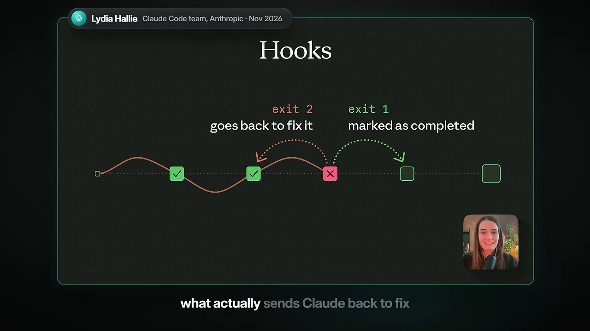
PR은 Claude가 먼저 리뷰해요
세션이 PR을 열면 CI(Continuous Integration)가 돌아요. Lydia 팀에서는 사람보다 Claude가 먼저, 코드를 쓴 세션이 아닌 새 컨텍스트로 리뷰해요. 아래 슬라이드 왼쪽 에이전트들이 버그 후보 네 개를 찾고, 가운데 에이전트들이 하나씩 검증해요. 'login retry never stops'는 줄이 그어져 dropped가 되고, 나머지 셋만 Important·Nit·Pre-existing 꼬리표를 달고 올라가요.
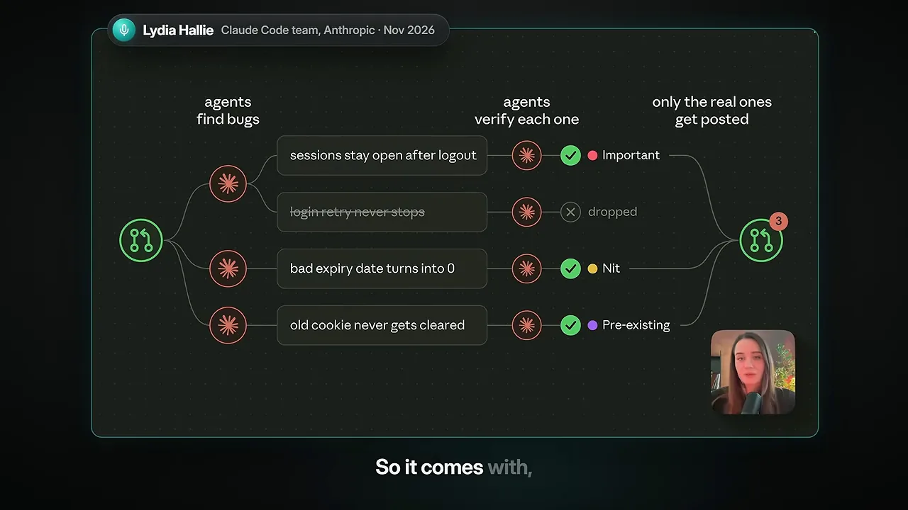
그다음 사람은 위험한 부분만 리뷰하고, 문서 같은 작은 변경은 검사를 통과하면 스스로 머지돼요.
세션 시작하기와 마무리
사람이 아직 하는 마지막 일은 세션을 여는 거예요. 이것도 넘어가고 있어요. 영상은 Claude Code Projects가 Pro·Max·Ultra 요금제에서 베타라고 소개해요. 메인 세션 하나에 한 주의 할 일 목록을 주면, 작업마다 세션을 따로 띄우고 돌아온 결과를 확인해요.
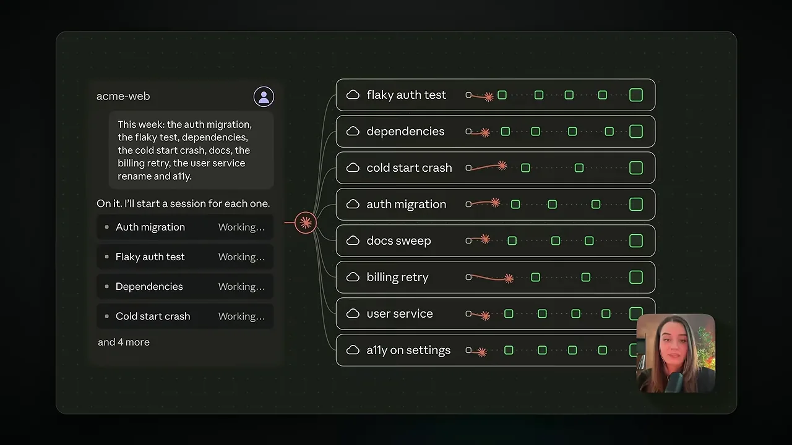
진행자는 이걸 메인 오케스트레이터가 서브에이전트에게 일을 나누는 방식의 프로젝트판, "서브에이전트의 강화판"이라고 불러요. 할 일 목록은 코드가 아니어도 돼요. 고객 보고서, 리서치 브리프, 콘텐츠 아이디어와 대본도 돼요. 채팅 12개를 오가는 대신 메인 채팅 하나와만 대화해요.
판단하는 모델과 일하는 모델을 따로
메인 세션은 직접 코드를 쓰지 않아요. 그래서 무엇을 할지 정하고 돌아온 결과를 판정하는 데 강한 모델이 맞아요. 아래 슬라이드 왼쪽 위에 'Fable decides and judges', 오른쪽 위에 'Opus 5.5 does the work'라고 적혀 있어요.
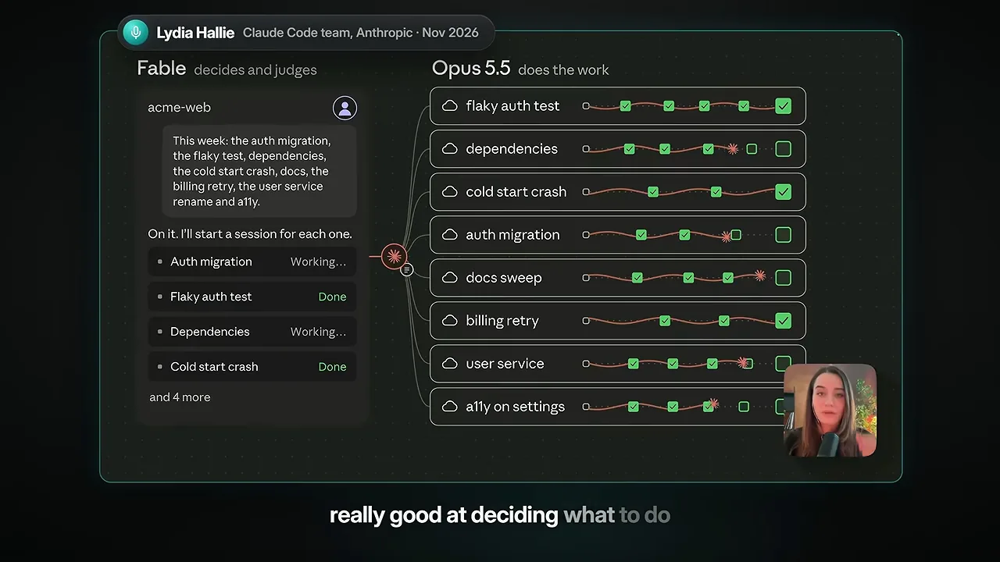
정리: 그대로 있지만, 손을 떠났어요
마지막 슬라이드가 다섯 가지를 한 표로 묶어요. 왼쪽이 예전에 직접 하던 일, 오른쪽이 지금 그 일을 맡은 것이에요.
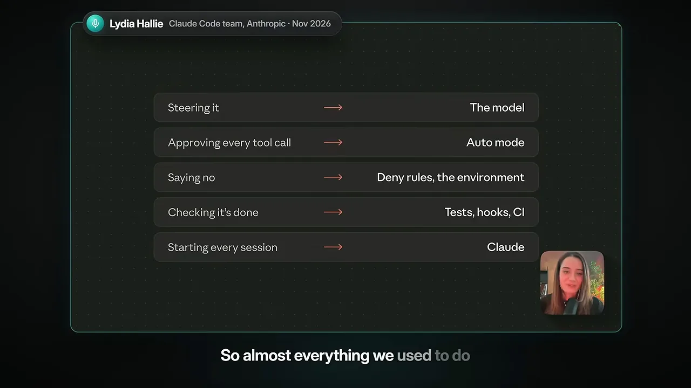
진행자의 결론은 강한 모델에게 지시를 너무 많이 줘서 길을 막지 말라는 거예요. Lydia는 이렇게 시작해 보라고 해요.
- 평소 Claude에게 주는 것보다 훨씬 큰 작업 하나를 골라요
- 잘못되면 잡아낼 검사를 하나 붙여요
- 클라우드에서 시작해요 세션이 어디서 막히고 내가 어디서 아직 끼어드는지 보여요. 그게 다음에 Claude에게 넘길 일이에요